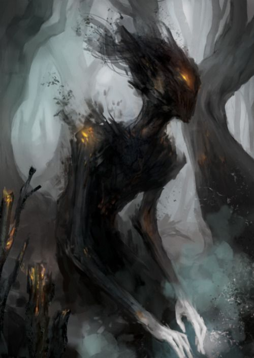

Ніхто не знає, коли саме з’явився Demonic. Одні кажуть, що він народився разом із першим криком хаосу, коли Всесвіт ще не мав форми, а темрява й світло билися між собою, мов дикі звірі. Інші вірять, що він — уламок чогось більшого, відколота частина первісного безумства, яке не змогло знайти собі місця в новому світі. Але всі сходяться в одному: він не має початку, бо хаос не народжується — він просто є.
Demonic не має справжнього тіла. Його форма змінюється, як дим у вітрі: інколи він нагадує людину, інколи — тінь із очима, що світяться жаром, а інколи — щось настільки спотворене, що розум відмовляється це приймати. Його рухи непередбачувані, а думки — уривчасті, як обірвані нитки. Він не знає, що таке мета, бо хаос не прагне. Він не знає, що таке план, бо хаос не думає. Він просто існує, і цього достатньо, щоб світ тремтів.
Його поведінка — це постійне хитання між крайнощами. Одного разу він може сидіти серед туманного лісу, тихий і спокійний, ніби слухає, як світ дихає. А наступної миті — рвати дерева з корінням, роздирати землю, кричати голосом, який не належить жодній живій істоті. У ньому немає логіки, немає послідовності, немає добра чи зла. Є лише імпульс. Є лише бажання, яке спалахує й гасне, як іскра.
Іноді це бажання — кров. Іноді — тиша. Іноді — просто рух, без сенсу й напрямку. Він може з’явитися серед людей, пройти повз них, не торкнувшись жодного, а може — знищити все навколо, навіть не усвідомивши, що зробив. Його не можна вмовити, не можна зупинити, не можна зрозуміти. Бо як зрозуміти те, що не має розуму в людському сенсі?
Мудреці кажуть, що Demonic — це нагадування про те, що хаос ніколи не зникає. Його можна стримати, можна загнати в глибини світу, але він завжди повертається. Бо хаос — це не ворог і не союзник. Це частина буття, така ж давня, як час, і така ж непередбачувана, як сама доля.
І все ж є ті, хто вірить, що в Demonic є щось більше, ніж безумство. Що в його очах інколи блимає іскра розуміння, ніби він на мить згадує, ким міг би бути, якби хаос не з’їв його сутність. Але ці миті короткі, як подих. І коли вони зникають, залишається лише тінь, що блукає світом без цілі, без пам’яті, без майбутнього.
Demonic не має історії, бо історія — це порядок. Він не має долі, бо доля — це шлях. Він не має імені, але люди дали йому його, щоб хоч якось окреслити те, що не піддається окресленню.
Він — хаос, що ходить світом.
І цього достатньо, щоб його боялися навіть боги.